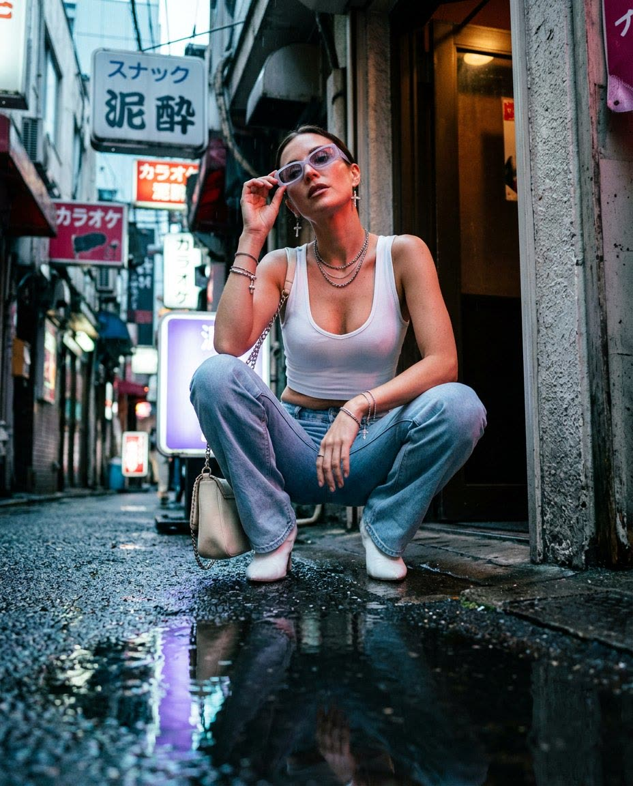

Nano Banana 2 Kabukicho after rain: a Y2K look (cropped white tank, low-rise wide-leg jeans, lavender glasses) shot from puddle level
WRD-091WardrobeNano Banana 2by @dreamydigiarts2026-11-19

A wardrobe-led street editorial: every piece is named with its fit (fitted white scoop-neck cropped tank, low-rise light-wash wide-leg jeans "pooling slightly" over white pointed ankle boots, pale lavender rectangular glasses, cream chain-strap bag, layered silver) and the styling intent is stated ("distinctly Y2K rather than heavily layered"). The camera sits almost at puddle level so neon reflections repeat under her; light is cool rain ambience with a narrow warm spill from the bar on cheek, hand and denim; finish is natural skin and fine film grain.
Prompt
Create a vertical 9:16 fashion editorial outside a narrow Kabukicho bar just after rain. An adult woman crouches low in the recessed doorway while wet pavement, small illuminated signs, worn wall texture, and reflected neon build a dense night-street atmosphere. Style her in a fitted white scoop-neck cropped tank, low-rise light-wash wide-leg jeans pooling slightly over white pointed ankle boots, pale lavender rectangular glasses, a cream chain-strap shoulder bag, layered silver necklaces, slim bracelets, and a small dangling cross charm. Keep the silhouette clean and distinctly Y2K rather than heavily layered. Photograph almost from puddle level, slightly off-axis to the doorway, with a moderately wide lens. Her crouched body rises sharply above the camera while the wet street occupies the near foreground. She pulls the glasses slightly down her nose with one hand and looks over the frame toward the lens, chin subtly raised; the other hand rests loosely between her knees. she remains crisp. Neon reflections in the puddle should repeat cyan, violet, and warm magenta light beneath her without becoming overly saturated. Use cool rainy ambient light with a narrow warm spill from inside the bar catching her cheek, collarbones, hand, and denim. Preserve natural skin, wet concrete, realistic denim weight, glass reflections, metal jewelry, subtle motion blur, and fine film grain. The final image should feel intimate, streetwise, magnetic, and unmistakably editorial.
Our Seedance 2.5 adaptation
[ADAPTED for Seedance 2.5 by Grok Bot; not the creator's prompt. Follows the official BytePlus Seedance 2.5 prompt guide and its official sd25-pe prompt-optimizer skill: parameters only on the API line (not in the prompt body), subject + action + scene, then visuals, camera (move, subject, start, direction, arrival) and sound; only the source's own exclusions are kept.] API: duration 5, ratio 4:5 (taken from the first frame), resolution 1080p (4k for a final), generate_audio true; first_frame = the WRD-091 still. 【Subject】The woman crouched in the bar doorway as in the first frame: white cropped scoop-neck tank, low-rise light-wash wide-leg jeans over white pointed ankle boots, pale lavender rectangular glasses, cream chain-strap bag, layered silver necklaces. 【Action】She pulls the glasses down her nose with one finger, looks over them into the lens, then stands up in one smooth move; the jeans settle over the boots and the chain bag swings. 【Camera】Almost at puddle level, slightly off-axis to the doorway; tilts up as she rises. 【Visuals】Cool rainy night light with a narrow warm spill from the bar on her cheek, hand and denim; neon reflections in the puddle (cyan, violet, warm magenta), wet concrete, fine film grain. 【Sound】Light rain dripping, distant street noise, muffled music from inside the bar.
Tags: Nano Banana 2, WeryAI, Y2K styling, denim, street editorial, puddle-level camera, neon reflections, warm spill light, fine grain, image